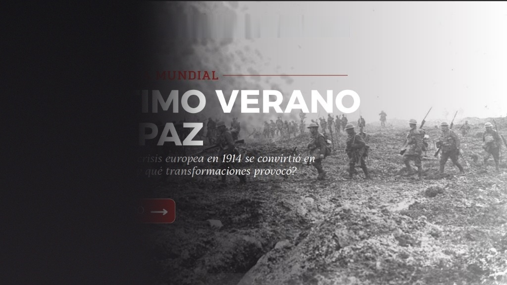

1914
El Estallido y la Ilusión de una Guerra Corta
De la Crisis de Julio al estancamiento en el Marne
Diapositiva 1914: Tropas marchando en verano de 1914
"Estaréis en casa antes de la caída de las hojas." — Promesa generalizada de los líderes europeos en agosto de 1914.
Hitos y Sucesos de 1914
- 28 de junio: Magnicidio en Sarajevo: Gavrilo Princip asesina al archiduque Francisco Fernando de Austria.
- 28 de julio: Inicio formal: Austria-Hungría declara la guerra a Serbia; se activa el efecto dominó de alianzas secretas.
- 4 de agosto: Invasión de Bélgica y entrada británica: El Plan Schlieffen alemán viola la neutralidad belga, forzando la entrada del Reino Unido.
- Septiembre: Batalla del Marne: Las fuerzas aliadas frenan el avance alemán hacia París. Nace la guerra de posiciones y las trincheras.
- Diciembre: Tregua de Navidad: Soldados británicos y alemanes cantan villancicos y juegan al fútbol en tierra de nadie.
Espacio preparado para la diapositiva del equipo de 1914